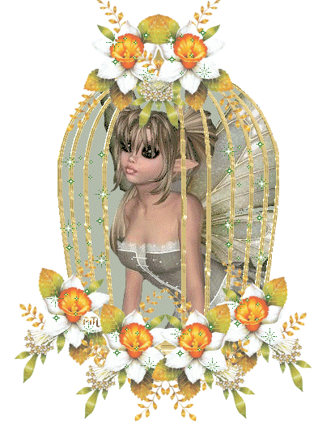
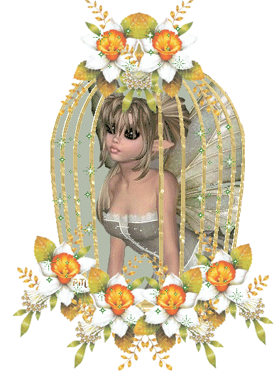
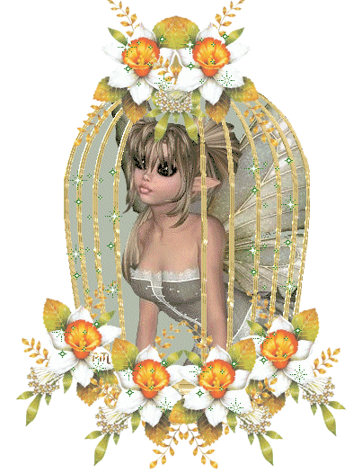

Made by
Seth Kranzler
THE TWENTY-FIFTH DAY
"However, a new intrigue was quietly taking form within the impenetrable walls of the Château of Silling; but it did not have the dangerous significance that had been attributed to Adelaide's league with Sophie"
This latest association was being hatched between Aline and Zelmire; those two young girls' conformity of character contributed greatly to their attachment to each other: both were mild-natured and sensitive, no more than thirty months separated them in age, they were both very childlike, very simple, very good-hearted: they had, in brief, almost all of the same virtues, and almost all the same vices, for Zelmire, sweet and tender, was also, like Aline, careless and lazy
They suited one another so admirably that, on the morning of the 25th, they were discovered in the same bed, and this is how it happened: being destined for Curval, Zelmire slept, as we know, in his bedchamber
"Aline was Curval's bedwife that same night"
But Curval, having returned dead drunk from the orgies, wished to sleep with no one but Invictus, and thus it fell out that these two little doves, abandoned and brought together by fortune, from dread of the cold both camped in the same bed and, in bed, 'twas maintained, their little fingers itched more than their dear little elbows
""
Upon opening his eyes in the morning and seeing these two birds sharing the same nest, Curval demanded to know what they were doing there, and ordering them both to come instantly into his bed, he sniffed about just below each one's clitoris, and clearly recognized that both of them were still full of fuck
"The case was grave: Messieurs did indeed wish the young ladies to be victims of impudicity, but they insisted that, amongst themselves, they behave decently—oh, for what will libertinage, perpetually inconsistent libertinage, not insist upon!—and if they sometimes consented to permit the ladies to indulge in a little reciprocal impurity, it all had to be both upon Messieurs' express instructions and before their eyes"
"And thus it was the case was brought before the council, and the two delinquents, who neither could nor dared deny the thing, were ordered to demonstrate what they had been up to, and before a crowd of spectators to display just what their individual talents were"
They did as they were told, with much blushing and not a little weeping, and asked to be forgiven their mistakes
But too attractive was the prospect of having that pretty couple amongst the culprits to be punished the following Saturday; consequently, they were not forgiven, but were speedily included in Durcet's book of sorrows which, incidentally, was being very agreeably filled up that week
"This chore completed, breakfast was finished, and Durcet conducted his searches"
The fatal indigestions yielded still another miscreant: 'twas the little Michette, she'd been unable to hold the bridge, she said they'd made her eat too much the night before, and these were followed by a thousand other infantile excuses which did not prevent her name from being written down
Curval,
his prick jumping like a young colt, seized the chamber pot and devoured its contents
And then bringing his angry eyes to bear upon her:
"Oh yes, by Jesus," said he, "yes, by the Saviour's fuck, you shall be spanked, my little rascal, my own hand will see to that
There are rules against shitting that way; you should at least have given us notice; you know damned well that we are prepared to receive shit at any hour of the day or night
"
And he fondled her buttocks very vivaciously while repeating the rules to her
The boys were found intact, no chapel permissions were distributed to them, and Messieurs repaired to table
During the meal, there was plentiful and penetrating discussion of Aline's deed; they ascribed a holier-than-thou attitude to her, said she appeared a little hypocrite, and behold!
here was proof of her real temperament at last come to light
""How now, my friend," Durcet said to the Bishop, "is one still to lay any store by appearances, above all those that girls parade?""
'Twas unanimously agreed nothing was more deceitful than a girl, and that, as they were every one of them false, they never made use of their wits save to be more skillfully false
These observations brought the table talk around to women, and the Bishop who abhorred them, gave vent to all the hatred they inspired in him
He reduced them to the state of the vilest animals, and proved their existence so perfectly useless in this world that one could extirpate them from the face of the earth without in the slightest countercarrying the designs of Nature who, having in times past very surely found the means to create without women, would find it again when only men were left
They proceeded to coffee; it was presented them by Augustine, Michette, Hyacinthe, and Narcisse
The Bishop, one of whose greatest uncomplex pleasures was to suck little boys' pricks, had been spending a few minutes playing this game with Hyacinthe, when all of a sudden he reared back and let out, not a shout, but a bubbling noise, for his mouth was full; his exclamation was interpreted thus: "Ah, by God's balls, my friends, a pucelage! That's the first time this little rascal has discharged, I'm sure of it!" And, truth to tell, no one had so far observed Hyacinthe carry things to that point; he was indeed thought still too young to bring it off
"But he was well advanced in his fourteenth year, 'tis the age when Nature customarily heaps her favors upon us, and nothing could have been more real than the victory the Bishop thought he had achieved"
""
None the less, the others were anxious to verify the thing, and each wishing to be witness to the
adventure, they drew up their chairs in a semicircle around the young man
Augustine, the most accomplished frigger in the seraglio, received permission to manualize the lad within clear sight of the assembly, and Hyacinthe was given leave to fondle and caress her in whatsoever part of her body he desired
There's no spectacle more voluptuous than that offered by a young maid of fifteen, lovely as the day, lending herself to the caresses of a boy of fourteen and provoking, by means of the most delicious pollutions, his springtide discharge
Hyacinthe, aided perhaps by Nature, but yet more certainly by the examples he had before his nose, fondled, handled, kissed naught but his frigger's pretty little buttocks, and it required little more than an instant of this to bring color to his cheeks, to fetch two or three sighs from his lips, to induce his pretty little prick to shoot, to a distance of one yard, five or six jets of sweet fuck white as cream, which emissions happened to land on Durcet's thigh, for the banker was seated nearest the boy and was having himself frigged by Narcisse while watching the operation
The fact once indubitably established, they caressed and kissed the child rather universally, each swore he'd love to receive a small portion of that youthful sperm, and as it appeared that, at his age and for a beginning, six discharges were not too many, in that he had after all just delivered himself of two without the least difficulty, our libertines induced him to shed another in each of their mouths
Much heated by this performance, the Duc laid hands on Augustine and frigged her clitoris with his tongue until he had elicited several solid discharges from her; full of fire and blessed with a mettlesome spirit, that little minx shot them off in short order
While the Duc was thus polluting Augustine, nothing was more engaging than to see Durcet, come up to gather symptoms of the pleasure he was not provoking, kiss that beautiful child's mouth a thousand times over, and swallow, so to speak, the voluptuousness another was causing to circulate throughout her senses
The hour was advanced, they were obliged to omit the midday nap and to pass directly into the auditorium where Duclos had been awaiting them for a long time; as soon as everyone had arranged himself, she took up the thread of her adventures and spoke as hereafter you may read:
I have already had the honor to remark in your Lordships' presence, that it is most difficult to fathom all the tortures man invents for himself in order to find, in the degradation they produce, or the agonies, those sparks of pleasure which age or satiety have made to grow faint in him
Hard it is to credit the assertion that one such gentleman of this sort, a person of sixty years and to a singular degree jaded by all the pleasures of lubricity, used only to be able to restore his senses to life by having the flames of burning candles applied to every part of his body, and principally to the ones Nature has intended for those selfsame pleasures
He would have his thighs seared, his
prick, his balls roasted, and above all else his asshole: while all this was going forward, he would be kissing an ass, and after the grievous operation had been repeated for the fifteenth or twentieth time, he would discharge while sucking the anus of the girl who'd been burning him
"Soon after that one, I had dealings with another who obliged me to use a horse's currycomb on him, to rub down his entire body with that instrument, quite as one does to the animal I have just named"
Directly his body was all an open wound, I'd next rub him with alcohol, and this second torture would cause him abundantly to discharge upon my breasts—that was the battlefield he chose to spray with his fuck
I would kneel before him, squeeze his prick between my bubs, and he'd quietly wash them with his balls' acrid humor
A third would have would have every hair on his ass plucked out one by one
"While that lengthy operation was advancing, he would frig himself upon a warm turd I'd just done for him"
Then, at the crisis' approach, I had, to give it the necessary encouragement, to drive the point of a scissors deep enough into each of his buttocks to draw a jet of blood
His ass was a maze of wounds and scars, I was scarce able to find an open space for my two gashes; immediately the steel entered him, he'd plunge his nose into the shit, smear it upon his face, and floods of sperm would crown his ecstasy
""

A fourth put his prick in my mouth and bade me bite it as hard as I could; in the meantime, as I chewed his poor device, I was expected to lacerate his buttocks with an iron comb whose teeth were ground to sharp points; and then, at the moment I sensed his prick ready to melt—a very faint, a barely perceptible erection would tell me so—and then, I say, I'd spread his buttocks prodigiously wide, ease them close to a burning candle I'd kept in readiness on the floor, and I'd braise his asshole with it
'Twas the burning sensation of that candle under his anus decided his emission; I'd therewith redouble my bitings, and would soon find my mouth full
""
"One moment, if you please," said the Bishop
"Every time I hear of someone discharging into a mouth I am reminded of the good fortune I had earlier today, and my spirits are disposed to tasting further pleasures of the same sort
"""
Saying which, he draws Invictus near, for that champion was on duty in the Bishop's alcove that afternoon, and falls to sucking the brave fellow's prick with all the energetic lustiness of a true bugger
Fuck explodes, the prelate gobbles it up, and straightway goes to repeat the operation upon Zéphyr
The Bishop was brandishing his knobkerrie, and 'twas seldom that women would feel completely at their ease when he was in this critical state and they were near him
Unfortunately, it was his niece Aline who happened to be within range
""
"What are you doing there, bitch?" he rasped; "I want men for my fun
"
Aline seeks to elude him, he seizes her by the hair and, dragging her into his closet along with Zelmire and Hébé, the two girls in his quartet:
"You'll see," says he to his friends, "you'll see how I'm going to teach these wenches to slip cunts under my hand when I'm doing my best to find some pricks
"""
Upon his order, Fanchon accompanied the three maidens, and an instant later Aline was heard to utter very shrill cries; then came tidings of Monseigneur's discharge, reverberating howls which blended with his dear niece's dolorous accents
"Everyone returned… Aline was weeping, squeezing and clutching her behind"
""Come show me what he did to you," said the Duc; "I love nothing better than to see traces of my distinguished brother's brutality"
"
Aline displayed I've no idea what, for I have never been able to discover what went on in those infernal closets, but the Duc exclaimed: "By fuck, 'tis delicious, I think I'll go off and do the same
"""
But Curval having pointed out to him that time was growing short, and having added that he had an amusing enterprise in mind for the orgies, which scheme would demand a clear head and all his fuck, Duclos was asked to go ahead with the fifth story in order that the sitting be brought to a proper conclusion; the storyteller therewith addressed the convocation once again: Belonging to that group of extraordinary individuals, said she , whose mania consists in wallowing in degradation and in insulting their own dignity, was a certain judge of the circuit court whose name was Foucolet
There's truly no believing the point to which that fellow would carry his furor; he had to be given a sample of almost every torture
I used to hang him, but the rope would break just in time and he would fall upon a mattress; the next instant, I would strap him to a St
Andrew's cross and make as if to break his limbs with a bar, but it was only a roll of pasteboard; I used to brand him upon the shoulder, the iron I used was warm and left a faint imprint, no more; I would flog his back in precise imitation of the public servant who performs those noble feats, and whilst I was doing all this I had to overwhelm him with a stream of atrocious invectives, bitter reproaches for various crimes, for which, during each successive operation, he would demand, a candle in his hand and wearing only his shirt, God's forgiveness and the law's, pronouncing his entreaties in a very humble and contrite tone; finally, the meeting would be brought to a close on
my ass, where the libertine would yield up his fuck when his head had reached the ultimate degree of distraction
""
"Well now, are you going to let me discharge in peace now that Duclos has finished?" the Duc asked Curval
""No, not a bit of it," the Président replied; "preserve your fuck, I tell you I need it for the orgies"
"
"Oh, so you take me for your valet, do you?" the Duc exclaimed
""You take me for a worn-out bugger? Do you suppose that the small quantity of fuck I'm going to lose in a moment will prevent me from joining in all the infamies which are going to pop into your head four hours from now?"
"Come now, Président, you know me better than that; banish your fears, I'll be fit again for anything inside fifteen minutes, but my good and holy brother has been pleased to give me a little example of an atrocity I'd be grief-stricken not to execute with Adelaide, your dear and estimable daughter"
"""
"And pushing her forthwith into his closet, along with Thérèse, Colombe, and Fanny, the female elements of his quatrain, he probably did there, with them, what the Bishop had done to his niece, and discharged with the same episodes, for, as not long before they heard Aline's terrible scream, so now their ears were treated to another from the lips of Adelaide and the bawdy Duc's yells of lust"
"Curval wished to learn which of the two brothers had been the better behaved; he summoned the two women, and having pored at length over their two behinds, he decided that the Duc had not merely imitated, but surpassed the Bishop"
They sat down at table, and having by means of some drug or other stuffed the bowels of all the subjects, men and women, with an abundance of wind, after supper they played the game of fartin-the-face: Messieurs, all four of them, lay back upon couches, their heads raised, and one by one the members of the household stepped up to deliver their farts into the waiting mouths
"Duclos was requested to do the counting and mark down the scores; there were thirty-six farters against only four swallowers: hence there were certain persons who received as many as one hundred and fifty farts"
It had been for this rousing ceremony Curval had wanted the Duc to keep himself fit, but such precautions, as Blangis had made perfectly clear, were quite unnecessary; he was too great a friend of libertinage to allow some new excess to find him unprepared; to the contrary, any new excess always had the greatest effect upon him, his situation notwithstanding, and he did not fail to produce a second discharge thanks to the humid mistral Fanchon wafted into his mouth
As for Curval, they were Antinoüs' farts which cost him his fuck, whereas Durcet bent before the gale that swept out of Martaine's asshole, and the Bishop lost all control in the
face of what Desgranges offered him
The youthful beauties' efforts, 'twill be remarked, came to naught; but is it not true that it is always the crapulous individual who best executes the infamous deed?


 
